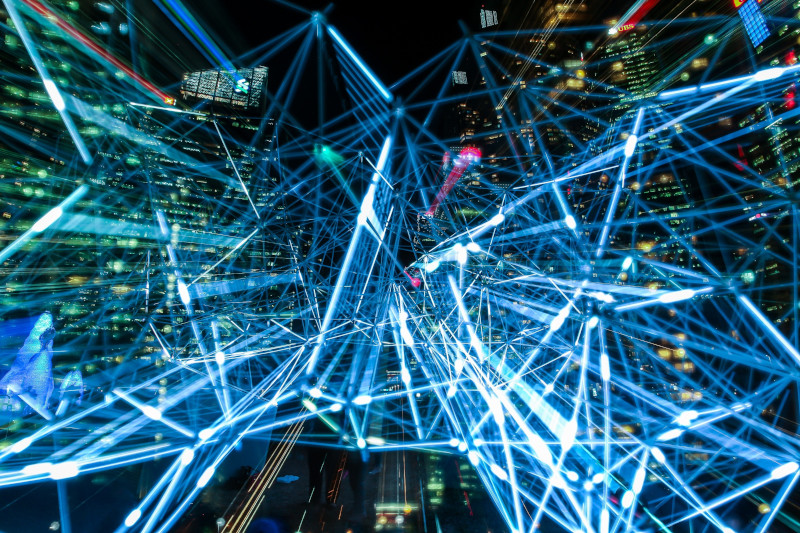

Die rasanten Fortschritte in der Automatisierung und der Technologie der künstlichen Intelligenz (KI) (Tools wie ChatGPT, Google Bard und Microsoft Bing) in diesem digitalen Zeitalter haben die Projektmanagementpraktiken erheblich verändert. Die verbesserten Projektmanagementtechniken sorgen für höhere Produktivität, bessere Entscheidungsfindung und effiziente Strategien.

Image courtesy: Pixabay (Pexels)
Hier werden wir die erheblichen Auswirkungen von Automatisierung und KI auf das Projektmanagement untersuchen und die Vorteile, Probleme und entscheidenden Aspekte für eine effektive Einführung hervorheben.
Automatisierung optimiert Arbeitsabläufe
Automatisierung bedeutet, sich wiederholende und alltägliche Aufgaben zu automatisieren, damit sich Projektmanager auf strategischere Aktivitäten konzentrieren können. Routineaufgaben wie Zeiterfassungsberichte, Datenanalytikund Projektstatus können automatisiert werden, was wertvolle Zeit spart und menschliches Versagen reduziert, sodass Projektmanager Ressourcen effektiv zuweisen, Projektzeitpläne optimieren und die Gesamtproduktivität steigern können.
KI ermöglicht datengesteuerte Entscheidungsfindung
Künstliche Intelligenz erweitert das Projektmanagement um erweiterte Datenanalytikfunktionen und ermöglicht es Projektmanagern, fundierte Entscheidungen auf der Grundlage von Erkenntnissen in Echtzeit zu treffen. KI-Algorithmen können große Mengen an Projektdaten analysieren und dabei helfen, Trends zu erkennen, Gefahren zu antizipieren und aufschlussreiche Vorschläge zu unterbreiten. Durch den Einsatz von KI-gestützten Analyselösungen können Projektmanager die Projektleistung klarer einschätzen, mögliche Engpässe erkennen und proaktiv mit Schwierigkeiten umgehen.
Verbesserte Ressourcenzuteilung
Automatisierungs- und KI-Technologien ermöglichen es Projektmanagern, die Ressourcenallokation zu optimieren. KI-Algorithmen können historische Daten einfach und schnell analysieren, um den Ressourcenbedarf vorherzusagen, Bereiche mit Ineffizienz zu identifizieren und optimale Ressourcenzuweisungsstrategien vorzuschlagen, sodass Projektmanager fundierte Entscheidungen über Personalbesetzung, Budgetzuweisung und Aufgabenzuweisungen treffen können, was zu einer effizienteren Ressourcennutzung und einer Verbesserung führt Projektergebnisse.
Verbesserte Zusammenarbeit und Kommunikation
Automatisierungs- und KI-Tools erleichtern die nahtlose Zusammenarbeit und Kommunikation zwischen den Projektteammitgliedern. Mit KI-gestützten Funktionen integrierte Projektmanagementsoftware ermöglicht den Informationsaustausch in Echtzeit, Instant Messaging und die Zusammenarbeit an Dokumenten. Teammitglieder können unabhängig von ihrem geografischen Standort problemlos auf projektbezogene Informationen zugreifen, Aktualisierungen austauschen und gemeinsam an Aufgaben arbeiten. Dieses Maß an Möglichkeiten zur Zusammenarbeit fördert den Zusammenhalt im Team, reduziert Missverständnisse und gewährleistet die Abstimmung im gesamten Projektteam.
Risikoidentifizierung und-minderung
KI-Technologien zeichnen sich dadurch aus, dass sie potenzielle Risiken identifizieren und deren Auswirkungen auf Projektergebnisse vorhersagen können. Durch die Analyse historischer Projektdaten und externer Faktoren können KI-Algorithmen Risikomuster und -indikatoren identifizieren und Projektmanager in die Lage versetzen, Risiken proaktiv anzugehen, bevor sie eskalieren, was zu besseren Strategien zur Risikominderung, einer verbesserten Projektresilienz und höheren Projekterfolgsraten führt.
Herausforderungen und Überlegungen
Obwohl die Auswirkungen von Automatisierung und KI auf das Projektmanagement erheblich sind, gibt es Herausforderungen und Überlegungen, die es zu beachten gilt:
Fähigkeiten und Anpassungsfähigkeit:
Die Implementierung von Automatisierungs- und KI-Technologien erfordert möglicherweise zusätzliche Schulungen und Weiterbildungen für Projektmanager und Teammitglieder. Unternehmen müssen ihre Mitarbeiter mit den notwendigen Fähigkeiten ausstatten, um diese Technologien effektiv nutzen zu können.
Datenqualität und Sicherheit:
Automatisierung und KI sind stark auf Daten angewiesen. Daher werden Datenqualität und -sicherheit von entscheidender Bedeutung. Unternehmen müssen robuste Data-Governance-Praktiken einführen, die Datengenauigkeit sicherstellen und strenge Sicherheitsmaßnahmen einhalten, um sensible Projektinformationen zu schützen.
Ethische Überlegungen:
Da KI-Technologien immer fortschrittlicher werden, müssen Unternehmen ethische Aspekte wie Voreingenommenheit, Datenschutz und Transparenz berücksichtigen. Projektmanager sollten sich dieser Probleme bewusst sein, wenn sie KI in Projektmanagementpraktiken implementieren.
Automatisierungs- und KI-Technologien haben die Projektmanagementpraktiken verändert und zu bemerkenswerter Effizienz, datengesteuerter Entscheidungsfindung und verbesserter Zusammenarbeit geführt. Projektmanager können wiederkehrende Aufgaben automatisieren, KI-gestützte Analysen nutzen, die Ressourcenzuweisung optimieren und Risiken proaktiv angehen, um so erfolgreiche Projektergebnisse zu erzielen.
Allerdings müssen Unternehmen die Herausforderungen und ethischen Auswirkungen der Einführung von Automatisierungs- und KI-Technologien berücksichtigen. Durch die Nutzung der Leistungsfähigkeit von Automatisierung und KI bei gleichzeitiger Bewältigung dieser Überlegungen können sich Projektmanagementpraktiken weiterentwickeln und an das digitale Zeitalter anpassen, wodurch die Projekterfolgsraten maximiert und den Stakeholdern ein Mehrwert geboten wird.
Verwandte Lektüren zu unseren Blog-Beiträgen:
●
KI-Tools wie ChatGPT und Google Bard werden das Projektmanagement revolutionieren
●
ChatGPT vs. Ihr Job vs. Projektmanagement-Softwarelösungen – Ist es Kriegszeit?